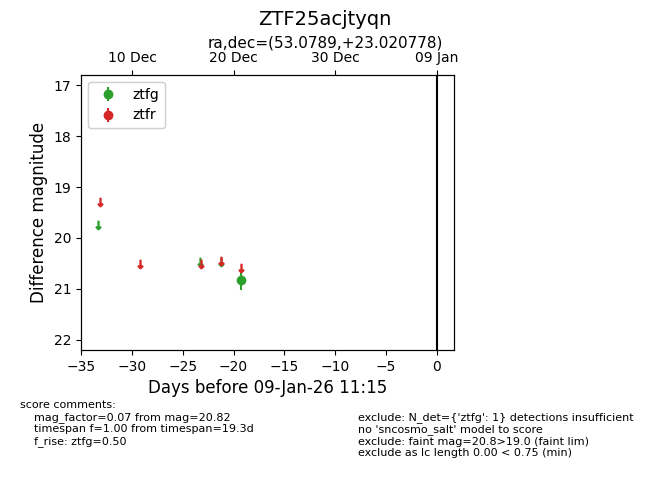
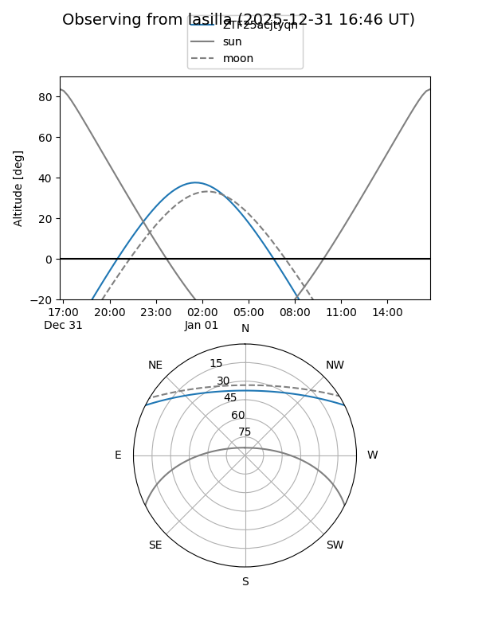
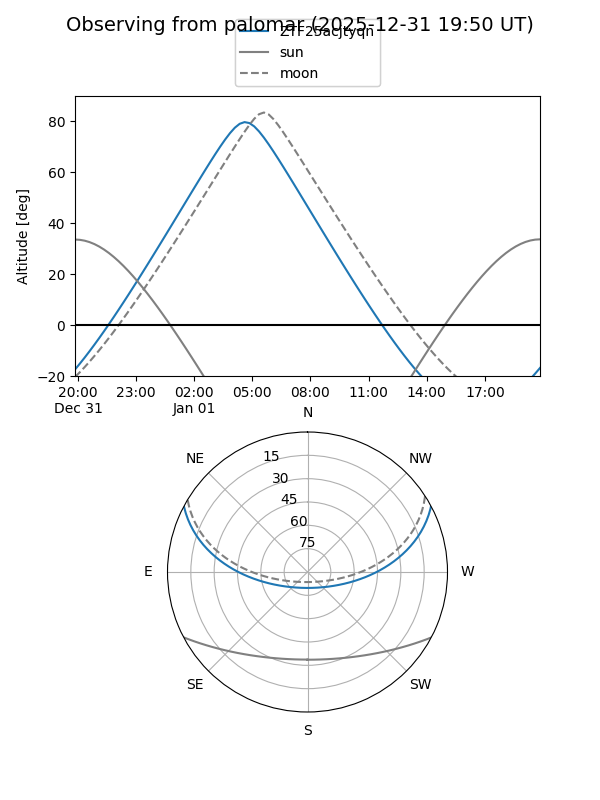

ZTF25acjtyqn
Target ZTF25acjtyqn at 2026-01-09 12:49
Aliases and brokers:
FINK: link
Lasair: link
ALeRCE: link
alt names
ZTF25acjtyqn (ztf,fink_ztf)
Coordinates:
equatorial (ra, dec) = 53.0789,+23.02078
equatorial (HMS+DMS) = 03:32:18.94,+23:01:14.80
galactic (l, b) = (164.5691,-26.56008)
Flags:
Photometry:
last ztfg=20.82
1 ztfg detections
Lightcurve

Visibility


Additional plots